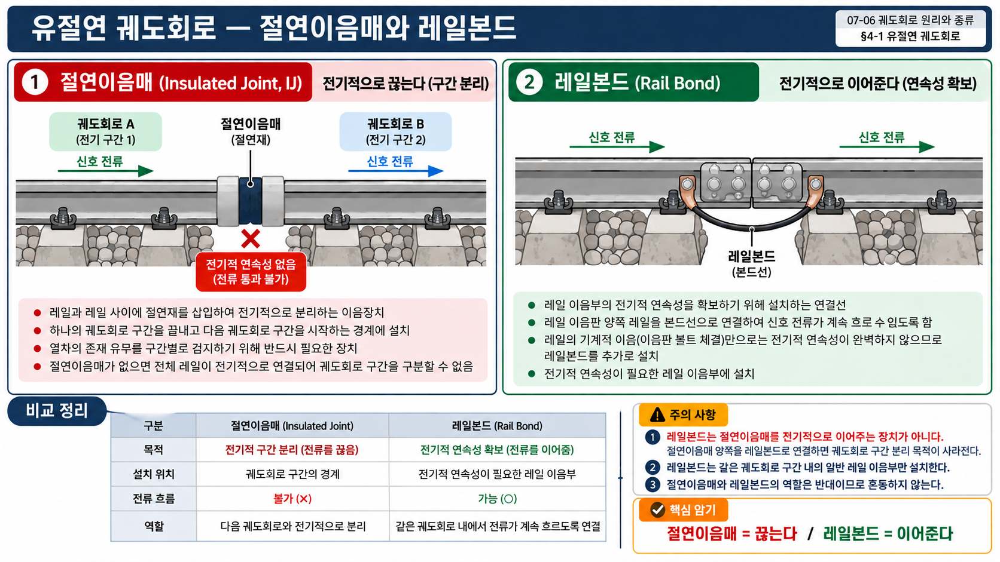

이음매(joint): 레일과 레일이 연결되는 부위. 이음매부는 충격·소음 발생 및 궤도 틀림의 주원인이 되므로, 장대레일 도입으로 이음매를 최소화하는 방향으로 발전.
| 분류 | 종류 | 설명 |
|---|---|---|
| 이음매판 정수 | 2정이음매 | 가볍고 시공 간단. |
| 3정이음매 | 강도·안정성 우수. 표준 본선 적용. | |
| 침목 대비 이음매 위치 |
현접법(懸接法) | 이음매가 침목과 침목 사이에 위치. 이음매부 지지력 약함 — 충격 분산. |
| 지접법(支接法) | 이음매 바로 아래 침목이 위치(직접 지지). 지지력 큼 — 충격 직접 전달. |

레일의 4가지 기능 (SOURCE 70)
① 주행표면 제공: 차륜이 구르는 면을 제공하여 안전한 주행 지지
② 하중 전달: 차륜의 정적·동적 하중을 침목·도상에 전달
③ 궤도 형상 유지: 정해진 궤간·선형·구배를 유지
④ 전류 통로: 신호용 궤도회로 및 귀선전류의 통로 역할
| 화학성분 | 영향 | 비고 |
|---|---|---|
| 인(P) | 레일 강도를 취약하게 만듦 — 냉간취성(저온 파단) 유발. 함량 제한 필요. | 유해 원소 |
| 황(S) | 적열취성(고온 파단) 유발. 용접·가공 시 균열 발생 원인. | 유해 원소 |
평저레일(Flat Bottom Rail, 비네트형): 두부(頭部, Head) + 복부(腹部, Web) + 저부(底部, Foot) 3부분으로 구성. 저부가 평평하여 침목 위에 직접 안착. 국내 및 세계 표준 단면. 이전의 쌍두레일·등철레일을 대체.
Q1 정답 ②
레일이음매 단점: 충격·소음 발생, 이음매부 궤도 틀림, 유지보수 빈번. 장대레일 도입으로 이음매를 최소화하는 방향으로 발전.
Q2 정답 ②
평저레일(Flat Bottom Rail): 두부·복부·저부 3부분 구성. 저부가 평평해 침목 위에 안착하기 유리. 국내·세계 대부분 국가 표준 단면.
Q3 정답 ②
현접법(懸接法): 이음매가 침목과 침목 사이에 위치. 이음매부를 침목이 직접 지지하지 않으므로 충격이 분산됨. 지접법(支接法)은 이음매 바로 아래에 침목이 위치 — 지지력 크고 충격이 직접 전달됨.